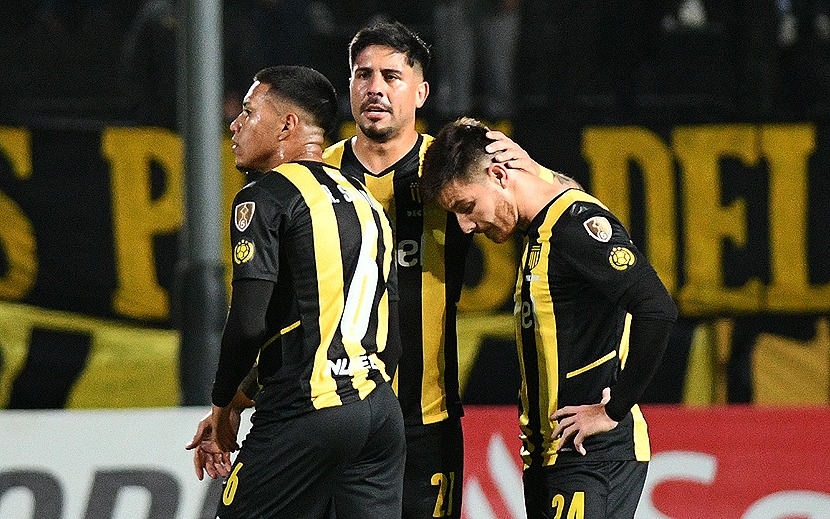

El Manya obtuvo su segunda victoria en la Copa Libertadores 2022 ante Colon en condición de locatario. A pesar de esto culmino último en su grupo y oficialmente no tendrá competencia internacional en el segundo semestre del presente año.
Peñarol llegaba a la última fecha de la Copa sin chances de clasificar a octavos, pero con una ínfima chance de poder volver a disputar la Sudamericana, esta vez desde en octavos. Para esto era clave el clásico paraguayo que se disputaba a la misma hora; Cerro debía no perder el clásico y con esto una victoria de Peñarol bastaba para quedar terceros.
Al equipo de Barrio Obrero le servía hasta perder por la mínima para quedar entre los 16 mejores equipos del continente.
Análisis del partido.
Peñarol ponía en cancha un equipo muy similar al que jugo contra Boston River, continuando la 4-4-2 que por fin había cambiado un poco la cara de este Peñarol, solo que el Canario (en una decisión inentendible) comenzaba desde el banco de suplentes con Betancourt desde el minuto 0, Jairo iba de titular desde el arranque, el Cachete Saravia tomaba el doble cinco junto a Gargano suplantando a Musto y, tras la lesión, volvía el Cachila Arias suplantando a Edgar Elizalde. Con esto el once inicial elegido por Mauricio Larriera iba con Dawson en el arco, la dupla de zagueros comandada por Arias y Menosse, laterales O’Neill y Aguirregaray, doble cinco de Gargano y Saravia, la dupla de volantes Máximo Alonso y Ceppelini y, por último, Viatri y Bethancourt en la delantera.
El partido comenzaba y Peñarol otra vez salía a presionar, aunque por lógicas razones que tienen que ver con el ritmo competitivo y hasta el nivel deportivo Peñarol no causo tanto errores en la salida de Colon como había causado con Boston River. Sin embargo, Colon ni por asomo tuvo esa tranquilidad y manejo de las situaciones visto en Santa Fe, así como Peñarol no tuvo esa pasividad a la hora de presionar. Peñarol salió a buscar el partido, en pocas palabras, algo que lamentablemente, no hizo en ninguno de sus partidos como visitante.
Viatri otra vez demostró el ímpetu a la hora de presionar y atacar como ante el Boston, teniendo la chance más clara del Aurinegro en el primer tiempo, un cabezazo que rozo el palo. El centro fue enviado por Máximo Alonso tras una buena combinación entre Saravia y O’Neill, todo por el carril zurdo, donde además se vio, otra vez, lo mejor del equipo. Jairo, Máximo y quizá hasta Saravia, confirmaron su titularidad,
demostrándonos que si tan solo le hubiéramos prestados atención a esos amistosos de verano y a esa Libertadores Sub 20 donde ellos 3 y muchos pibes más brillaron, el semestre podría haber sido muy distinto.
Peñarol jugaba mejor que el rival, sin ser brillante no mucho menos, pero lo molestaba a la salida y cuando tenía el balón generaba situaciones, principalmente por el carril ya comentado, ya que en el derecho la historia era muy distinta. El Vasquito otra vez, muchas ganas, pero poco juego, llego a tener jugadas de correr para adelante hasta perder el balón, en ocasiones donde tenía pases accesibles, pero decidía tratar de llegar a fondo a pesar de estar más que marcado, terminando por encerrarse y perder la posesión posteriormente. Por otro lado, Ceppelini se cerraba, no desbordaba y dejaba bastante solo a un Aguirregaray que, como ya mencionamos, se encerraba en la esquina y como mucho lograba sacar un córner
Peñarol bajo su nivel durante los 20 del primer tiempo, y Colon aprovecho esas falencias anotando un gol en el minuto 31 por una serie de errores iniciada por un Vasquito incapaz de rechazar el balón y después de Cachila que deja solo a Farias, del Vasquito de nuevo al dejar solo a Beltrán, y por último otro error de la defensa al dormirse en el rebote y dejar que la capture el mismo Farias. En general, quizá los 2 rendimientos más bajos del semestre en la parcela defensiva, Aguirregaray y Arias, terminan en el gol del Sabalero.
Tras el 0-1 parcial, la desazón, Peñarol buscaba por todos los medios, y sin éxito, encima durmiéndose en defensa, permitiendo varias contras a Colon, contras que jamás aprovecho. Encima, en Paraguay Olimpia triunfaba en la Nueva Olla eliminando a Peñarol sin importar siquiera el resultado del Campeón del Siglo.
El primer tiempo sellaba sus acciones con un Aurinegro derrotado y con dudas principalmente en el fondo. Betancourt no lograba tener ni una chance clara y quizá lo único a destacar fueron esos primeros 20 minutos y las pelotas paradas, donde el Manya se impuso, en gran parte por Lucas Viatri.
Para el segundo tiempo Larriera toma una decisión muy buena, saca a un Gargano de mal partido, pasando a Ceppelini al medio junto a Saravia y colocando a Laquintana de volante. Laquintana no hizo un gran partido, pero el hecho de mandar a Ceppelini a jugar en su posición natural le dio a Peñarol una mejoría ofensiva gigantesca. Ni 2 minutos tardo Peñarol en marcar, con un gol suyo, en una jugada iniciada por él.
El Manya estaba en su mejor momento, presionando y atacando mas que nunca, el segundo estaba al caer. En el minuto 55 sale Betancourt y entra el Canario, Peñarol iba con todo. Sin embargo, a los 60 minutos, unos incidentes en la tribuna Güelfi, entre hinchas Aurinegros y Sabaleros del cual no viene al caso hablar, freno el partido por 30 minutos. El equipo se había enfriado y no parecía poco probable mantener esa intensidad mostrada en los primeros 25 del segundo tiempo.
El partido volvió sobre los 90 minutos de juego y se fue hasta los 120. En ese tiempo el clásico paraguayo estaba por llegar a su fin y se mantenía la victoria de la O por la mínima.
Peñarol salió mucho que Colon a disputar los últimos 30, exigiendo a Burian, arquero Sabalero, ni bien comenzados los 30.
En Paraguay había penal para Cerro Porteño en la hora, era posible la Sudamericana, sin embargo, Cerro fallo el penal, y con eso culmino el partido en la Nueva Olla. Peñarol eliminado de todo.
Ni bien terminan las situaciones en Paraguay, Peñarol tuvo un córner, córner que, muy bien ejecutado por Ceppelini, encontró al Talibán Menosse, que con un cabezazo volvió a meter gol, mostrando la gran mejora aérea del equipo en los últimos 2 partidos.
Seguramente os jugadores se habían enterado nada más del penal de Cerro, ya que lo festejaron con locura ante la mirada atónita de un Campeón de Siglo que buscaba que había pasado con ese penal de Cerro Porteño.
Con el paso de los minutos, y de la euforia propia del gol, los jugadores se enteraron de lo sucedido en Paraguay y de que ya no había chance alguna.
Tras esto Peñarol se encargó de manejar el partido. En el minuto 103 entro Da Silveira por Menosse y Alejo Cruz por Alonso y, por último, en el 113 Musto por Viatri.
El Manya no paso mayores sobresaltos y se despidió de las competencias internacionales en 2022 con victoria, una victoria amarga ya que se hicieron ciertas cosas y se tomaron ciertas decisiones, que de tomarse semanas atrás podrían haber cambiado esta nefasta situación y quizá clasificarnos a alguna copa.
Peñarol no solo desperdicia un semestre, desperdicia un año entero, un año que además debía ser clave para dar ese paso hacia adelante en las participaciones internacionales, paso que encima de no concretarse nos atrasa 1 o 2.
Campaña triste por un periodo de pases malo y decisiones en general malas desde el 1 de enero del año actual.
Artículo escrito por: Vicente Alves.
created with
Website Builder Software .